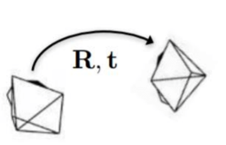

|
I finished my B.Sc in Computer Science, at age 18, via Etgar program at Haifa University for outstanding high school students. Currently, I am a M.Sc student at Weizmann Institute of Science |

|
|
|
|  |
Fadi Khatib*, Yuval Margalit*, Meirav Galun, Ronen Basri Preprint, 2022
/
ArXiv /
Project Page /
We proposes a generalizable, end-to-end deep learning-based method for relative pose regression between two images, by utilizing coarse features from the pre-trained local feature matching architecture - LoFTR. Our method works exceptionally well with limited training data. |
|
|